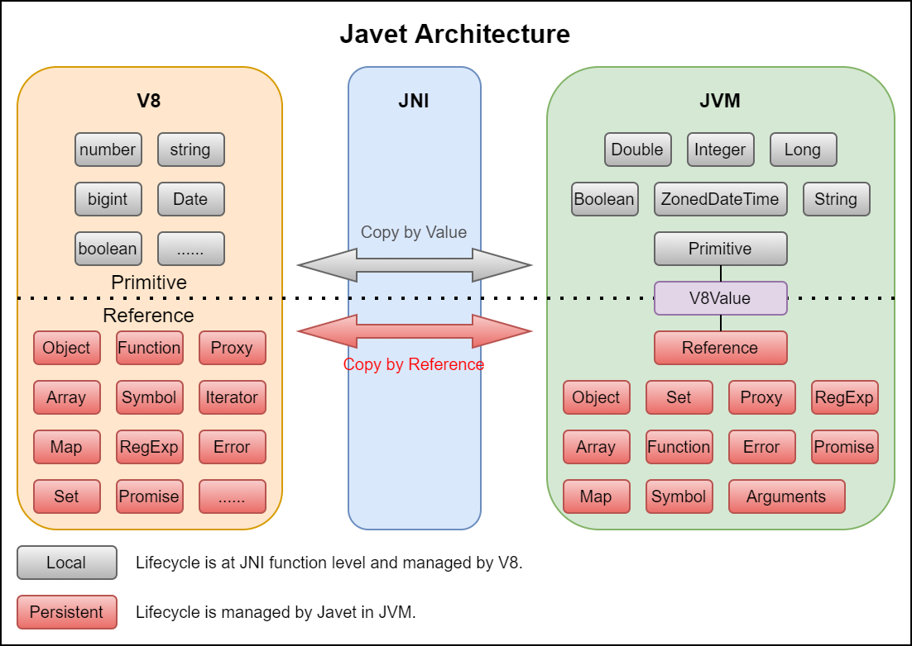
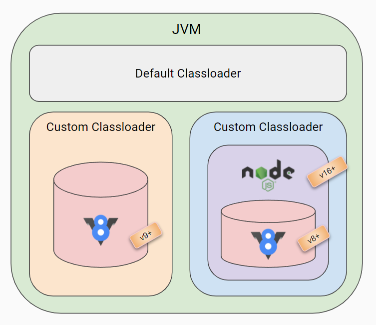
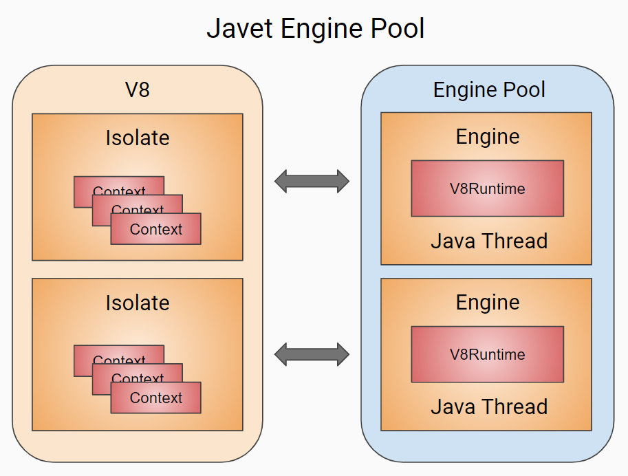
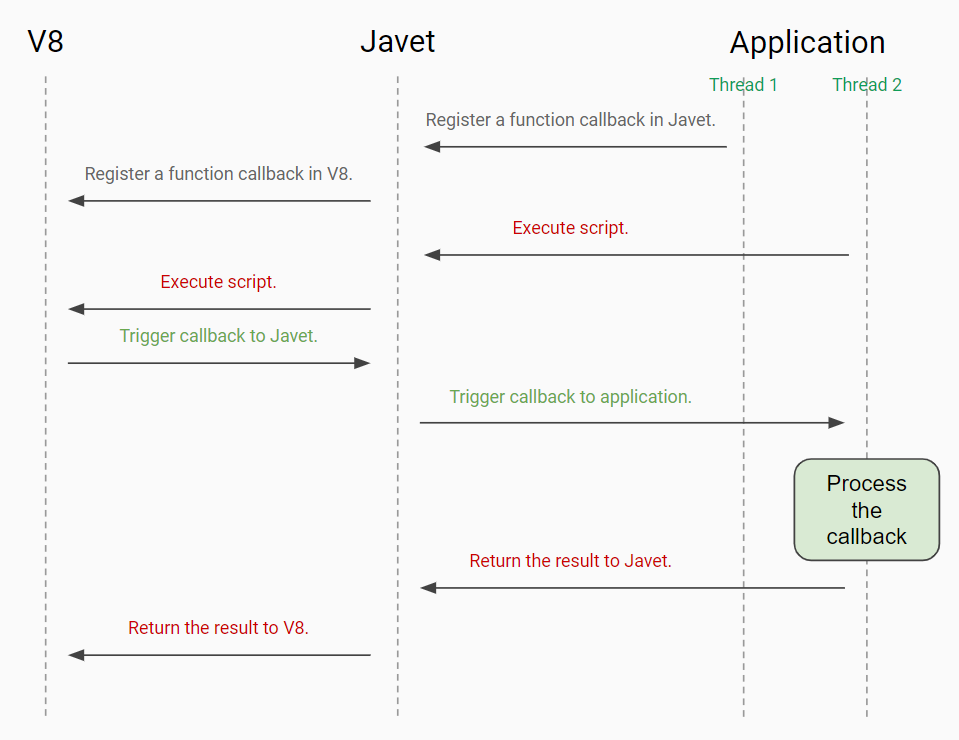
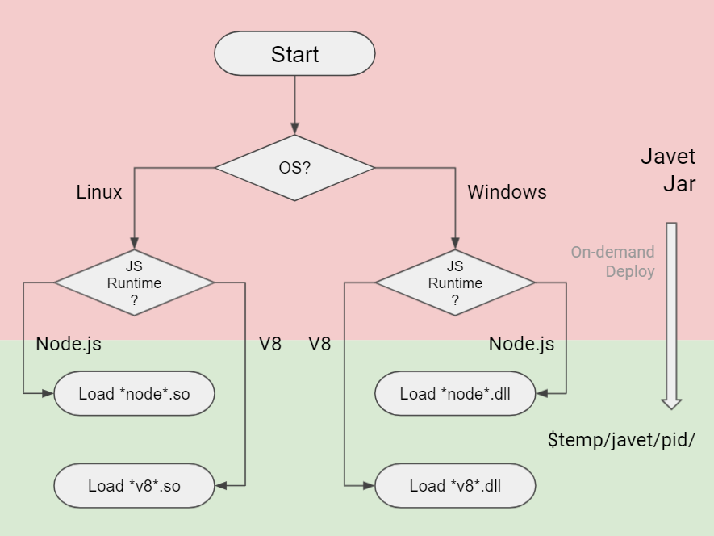

Javet Design¶
Architecture¶
Primitive and Reference Types in Javet¶
There is a vague boundary between V8 primitive and reference types. In Javet, the definition of primitive is a mixture of both V8 and Java primitive types as a trade-off in design.
Feature |
Primitive |
Reference |
|---|---|---|
Interception |
No |
Yes |
Memory Copy |
Copy by Value |
Copy by Reference |
Resource Leak |
Not Possible |
Possible |
Set to Weak |
No |
Yes |
Reference typed objects keep memory footprint in V8 + JNI + JVM. All resource will be recycled when close() is called. That is quite an old school way of managing resource. Javet tries to hide that kind of tedious work from Java applications via try-with-resource.
Please refer to Best Practices for details.
Node.js Mode vs. V8 Mode¶
Javet supports both Node.js mode and V8 mode both of which can co-exist in one JVM. In other words, they can run side by side and don't interfere with each other.
As the diagram shows, both Node.js and V8 are lazy loaded in dedicated custom classloaders. Detailed comparisons are as following.
Feature |
Node.js Mode |
V8 Mode |
|---|---|---|
Lazy Loadable |
Yes |
Yes |
Customization |
High |
High |
Node.js Ecosystem |
Complete |
No |
Security |
Low |
High |
Unload |
Yes |
Yes |
V8 Ecosystem |
Complete |
Complete |
V8 Version |
Low |
High |
One of the beauties of Javet is all the features in V8 mode can be applied to Node.js mode. Here are some examples.
Virtualization - All Node.js modules can be virtualized. E.g.
console,fs,HTTP,Net,OS, etc.Zero-copy - JVM can share the same byte buffer with Node.js and V8 to achieve zero-copy.
Multi-threading - Multiple Java threads can host multiple Node.js runtime instances with only one copy of V8 objects visible to those instances.
Beyond Node.js - Javet allows explicit
await()so that applications can take more control overasyncexecution.
Module¶
Executing all scripts in global context is not recommended when project size increases. Javet provides complete support to applications so that V8 runtime context is aligned with the way Node or Chrome does. That brings the module system.
Unfortunately, V8 has very limited support to the JS module system. However, that is not bad because V8 leaves all the possibilities to Javet. The typical challenges Javet faces are as following.
Sync or Async
Module Location
Module Dependency
require() vs. import()¶
Feature |
Async |
Original V8 |
Javet Node.js Mode |
Javet V8 Mode |
|---|---|---|---|---|
|
No |
No |
Yes (Complete) |
Yes (with an Interceptor) |
|
Yes |
Yes (Partial) |
Yes (Complete) |
Yes (Complete) |
Module Virtualization¶
Javet doesn't build require() in but allows applications to set an interceptor because Javet doesn't know how to locate the modules and doesn't want to know for security issues. So it's up to the applications to define their own ways of locating the modules.
Javet provides complete support to ES6 import() because certain work inside JNI has to be in place as V8 only partially supports import(). So, in Javet the module is kind of virtualized, in other words, the module is represented by an arbitrary string that can be interpreted by applications during runtime. E.g. module.js may come from a file, a URL, a string in memory or whatever. Javet stores the compiled and evaluated module in a map with that string as key, and feeds V8 that module when V8 looks it up by that string.

Engine Pool¶
V8 Isolate and Context in Javet¶
Getting started with embedding V8 is an excellent article that explains the concepts, design, insights of V8. In summary:
An isolate is a VM instance with its own heap.
A context is an execution environment that allows separate, unrelated, JavaScript applications to run in a single instance of V8.
In Javet, that model is simplified to 1 engine - 1 runtime - 1 isolate - 1 context. In V8Runtime, resetIsolate() and resetContext() are both exposed. It is recommended to always use resetContext() to get a brand new V8 context for the following reasons.
resetContext()is a much cheaper operation with much better performance.resetContext()is good enough in terms of getting a brand new V8 context.
Javet Engine Pool¶
Multiple Javet engines are managed by Javet Engine Pool which works almost the same way as a typical DB connection pool. Javet Engine Pool is thread-safe. However, Javet Engine is NOT thread-safe because it is designed to be single-threaded and lock free for the following reasons.
V8 isolate and V8 context are single-threaded. Thread context violation results in V8 core dump immediately.
Javet Engine performs better without locks. Actually, Javet engine only validates current thread ID to minimize the performance overhead.
Please refer to Best Practices for details.
Interception¶
Javet allows intercepting almost all V8 API so that JS code actually interacts with Java code behind the scene.
Sample code is available at V8 Function.
Cross-platform¶
Javet packages all the libraries in a single jar file and automatically loads corresponding library per OS and JS runtime.
Javet calculates the library file name from OS and JS runtime.
Javet unpacks the library files from resource directory to
system_temporary_directory/javet/pid.Javet loads the library files using either default classloader or custom classloader.
Multi-process Safety¶
Javet is multi-process safe because it deploys the library files to system_temporary_directory/javet/pid to avoid race conditions during initialization. Also, Javet purges legacy libraries (at least 1 minute old) at the beginning of the initialization.
Memory Leak Detection¶
Javet native library keeps track of every new and delete in JavetNativeMonitor. Javet every unit test case fetches the tracking data, compares the new and delete count to verify unmanaged objects are properly allocated and freed.
This feature is only turned on in debug version and there is zero performance overhead in release version.